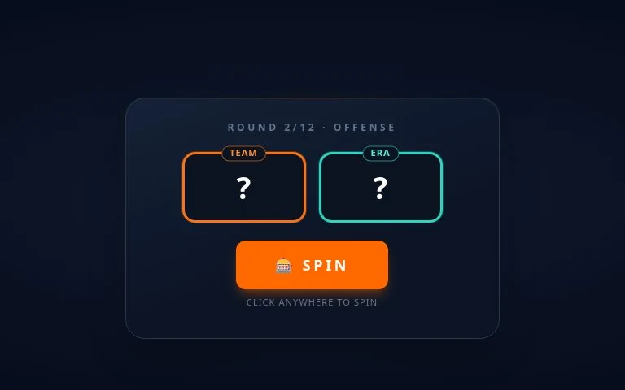

Let the spin set the board
In the 20-0 game, press SPIN to reveal a franchise and era. That combination sets your available pool for the round. You are choosing from this board, not searching the whole history of football.
Play the 20-0 game in your browser. Draft a 12-player NFL roster from team-and-era spins, then see whether your lineup can finish an unbeaten season.
Six picks on offense. Six on defense.
Build the roster, then reveal its record.

ONE SPIN CAN CHANGE EVERYTHING.The hard part is fitting the offer to the roster you still need.
The NFL 20-0 game puts the draft in your hands. A spin reveals a franchise and era; you select one available player and assign him to a legal roster spot. After six offensive picks and six defensive picks, the completed lineup receives a projected season record.
This is a compact all-time roster, with twelve starting slots rather than a complete NFL depth chart. There is no drive to call or tackle to time. The challenge is deciding which season of a player belongs in your lineup, given the offer you have right now.
A card’s raw totals tell only part of that story. The game rates a player against peers from his own era, so a larger yardage number from a different football environment does not settle the comparison. Use the player ratings guide for that distinction and the draft rules for legal placement.
Follow the round from its first spin to the final result. Selecting a card opens the choice; assigning a highlighted position commits it.
In the 20-0 game, press SPIN to reveal a franchise and era. That combination sets your available pool for the round. You are choosing from this board, not searching the whole history of football.
Look at the player’s position and the information your mode reveals. A familiar surname is a starting point. The card represents a particular season, so inspect what is actually in front of you.
Tap the selected player’s highlighted destination to assign him. A position filter only narrows the list of candidates; it does not place anyone in your lineup.
Complete offense, continue through defense, and reveal the result after the last assignment. Review the finished lineup alongside its projected record and grade.
Switch sides to explore the full-roster layout before your next pick.
QB, RB, WR and TE each have one named slot. Two additional FLEX slots can take eligible running backs, receivers or tight ends. That gives the offense six starters without requiring a second quarterback.
A FLEX supplies another destination for an eligible skill player. Confirm the highlighted slot before assigning the card.
The defensive unit has five named roles—EDGE, DT, LB, CB and S—and one D-FLEX. Some cards have more than one eligible role. Check those highlighted destinations on the individual card rather than treating every defender as interchangeable.
D-FLEX is shared defensive space. Use the game’s highlighted destinations to confirm which card can fill it.
The mode changes what information you see. Full roster, offense only and defense only are separate choices about how much of the lineup you draft.
Classic keeps the ratings and statistics available. Expand a candidate, read the listed season, and compare the fields that matter to that role. It is the easiest place to learn what the board is telling you.
Gridiron IQ hides ratings and statistics. You have to judge the offered player-season from football knowledge. Before committing, say what you remember about his role on that team; a familiar name alone is a thin reason.
The player above starts in Classic with a full roster and Prime seasons. Prime seasons uses each player’s best season within the era spun; the alternative allows different elite seasons. To change setup, open Menu → Home → Solo inside the game. These page examples do not change the live draft.
Not sure which to try? Make one Classic run before hiding the stats.
Before choosing another player at a filled position, check which open slot would take him.
Four offensive spots are filled. A receiver and a tight end are available, each eligible only for his named role or FLEX. Place the receiver in FLEX, or the tight end at TE, and see what the final pick must cover.
Choose a placement to see the remaining vacancy.
This is a placement lesson, independent of your live draft. Ratings and future offers still decide the better choice.
The full-roster scoring reference weights QB at 1.5×, EDGE and CB at 1.2×, and the other slots at 1.0×. These are relative contributions to the roster evaluation, applied alongside the individual player ratings.
The live sort offers Offense · Total YDS. That is a combined sorting measure; an individual card can show passing, rushing or receiving fields separately.
| Card | Field | Meaning |
|---|---|---|
| QB | YDS · RuYDS | YDS is passing yards; RuYDS is rushing yards. The expanded Geno Smith card above separates them. |
| WR / TE | REC · YDS | REC counts catches; this card’s YDS counts receiving yards. Total YDS in the sort can include other production. |
| QB vs defense | INT | For a quarterback: interceptions thrown. For a defender: takeaways. Check the player’s role before judging the number. |
Use these four checks before committing a difficult pick. Your ticks belong to this page and save locally when browser storage is available.
Check a reminder when you have answered it for the current pick.
The target is a projected record of twenty wins and zero losses: seventeen regular-season games plus three playoff games. A perfect run earns the published S+ grade. That is the result to look for after the draft, rather than treating a lineup of famous names as proof of success.
The projected record comes from the roster’s position-weighted strength on a non-linear win curve. Near the top, another win is harder to gain; improving a card does not imply a fixed one-win increase. The results guide separates the displayed record, grade and roster evaluation.
For a useful review, save the completed roster with its result and name the choice you would revisit. Keep the observation narrow: “I passed on an eligible cornerback” is evidence you can inspect. “That player always ruins a run” needs more than one result.
A few details worth clearing up before you commit the next pick.
A standard run includes exactly one curated legend-era offer. That guarantee is about the offer, not a player already assigned to your roster. You still choose from the revealed candidates and need an eligible open destination.
Reroll an unhelpful team-and-era offer with a particular vacancy in mind. The full-roster rules give one reroll to offense and one to defense. Inspect the legal options before spending it; the reroll decision guide explains how to weigh keeping the offer against replacing it.
No. You build the roster and receive its projected season result. The player does not ask you to control passes, runs, tackles or kicks during individual matches.
You can use the browser player on this page without installing a separate app. Press Play to open it. If the live game presents an account or access prompt, read that requirement before continuing; see the mobile play guide for the smaller-screen controls.
Choose from the candidates offered for the revealed team and era. Check the card’s listed role and the open highlighted destinations rather than assuming a remembered player is available. The roster eligibility reference explains the named and flexible slots.
Compare the completed lineup with the candidates you remember passing over. Was the concern a low-rated starter, a poor placement, or limited information in IQ mode? Use the weak-link review to turn that observation into a specific question for the next draft.
Choose the part of the draft you need to understand, then return to the live board.
Pick your mode, trust a reason for every selection, and see how far your roster can go.